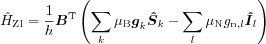
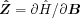
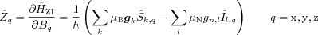
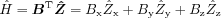

Zeeman interaction Hamiltonian components.
[Zx, Zy, Zz] = zeeman(SpinSystem) [Zx, Zy, Zz] = zeeman(SpinSystem, Spins)
zeeman returns the three operators involved in constructing the
Zeeman interaction Hamiltonian

These three operators Zx, Zy and Zz are the cartesian
components of the vector derivative
,
i.e.

and have to be multiplied by the respective B field components and summed up to get the complete Zeeman interaction Hamiltonian

All quantities are formulated in the molecular frame, i.e. x refers to the x axis of the molecular frame etc. All operators are in units of MHz/mT.
SpinSystem is a spin system structure, defining spins and g
values. If Spins is given, only a part of the spins of the system
is included in the operators. Spins must then be a row vector of
indices specifying which spins should be included. For a system with n
electron spins, a number between 1 and n indicates electron spins,
and n+1 and above specify nuclear spins, if present.
In a spin system
ABC = struct('S',1/2,'g',[2.1 2.1 2],'Nucs','14N','A',[1 1 1]);
the Zeeman interaction Hamiltonian's x component of the nucleus is
[Zx,Zy,Zz] = zeeman(ABC,2); Zx
Zx =
0 -0.0022 0 0 0 0
-0.0022 0 -0.0022 0 0 0
0 -0.0022 0 0 0 0
0 0 0 0 -0.0022 0
0 0 0 -0.0022 0 -0.0022
0 0 0 0 -0.0022 0
eeint, hfine, nquad, sham, zfield